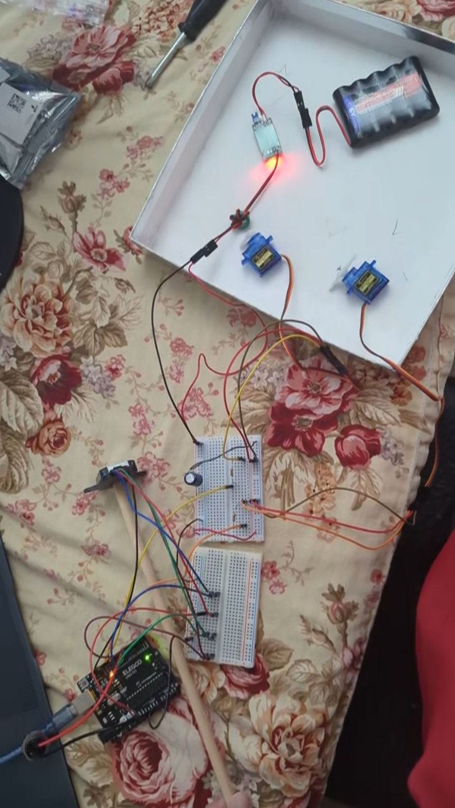

02 / 04 · AeroHydro Research and Technology Associates · Ongoing
Oscillating-Wing Power Generator: Closed-Loop Control & Firmware
- Control Architecture Selection
- Embedded C++
- Arduino
- Quadrature Encoding
- Real-Time Loop Design
- Telemetry
- Field Debugging
Overview
The mechanism moves in wind but does not oscillate usefully on its own. A controller has to start it, sustain it, and keep it controllable in gusts nobody can predict, on hardware one person can debug at a remote site with no mains power. I co-own the embedded feedback controller and its firmware with a fellow researcher from the University of Washington: architecture choice, implementation, bench and field validation, and the telemetry the rest of the program analyzes.
Technical Approach
Architecture screening, real-time loop, bench and field validation
Seven candidate architectures were classified and rejected on stated grounds before one was written. The real-time loop reads a shaft-mounted quadrature encoder at 200 Hz. Every parameter that survived had to be one I could explain against observed motion on the bench, not one that merely made the machine run.

Photo coverage for this project is limited to the bench build above; the mechanism it drives is documented in Project 01.
Outcomes
- Shipped a two-state switching controller with no tuned gains, which deletes the tuning surface entirely.
- Firmware went from 301 lines with four gains and two loops, to 155 in one loop with one gain, to none.
- Two parameters settable over the serial link let a seven-run sweep execute in about eight minutes, with no recompile.
- With a clamp-only failsafe, the survival envelope is hybrid mechanical and software.
Challenges
- I lost weeks to a blocker I was certain was a dead encoder channel. It was a gain set low enough that my own commands fell below the servo's mechanical deadband. Nothing was broken. I had been reading a symptom as a fault.
- I scrapped a controller that was overengineered. Fifteen tuning parameters, it ran, and I could not explain how any one of them contributed to the motion. The theory I studied to build the algorithm could not replace watching the machine on the bench and seeing what each parameter actually did to it. Rewriting it into something the team could check line by line cost weeks I had not planned for.
- Every gain I deleted was defensible on its own. I never stepped back to ask what removing all of them together had done to the design until a later pivot forced the question.
- I argued against one control architecture before it was adopted, on low-wind starting authority, and the field data did not support me. I recorded my advisor's rebuttal beside my objection and closed the entry out against the result.